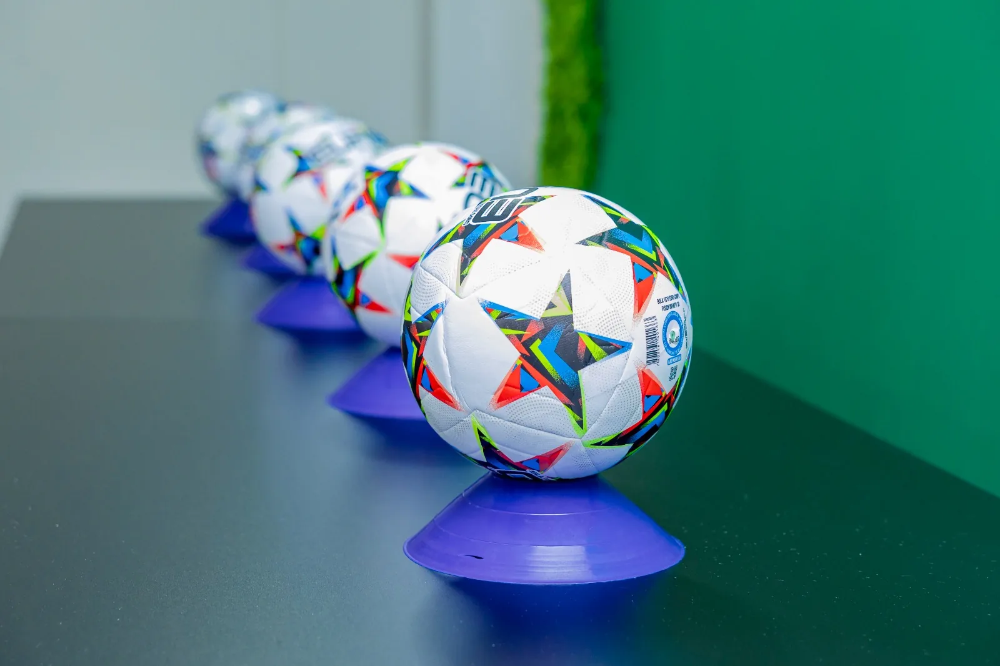
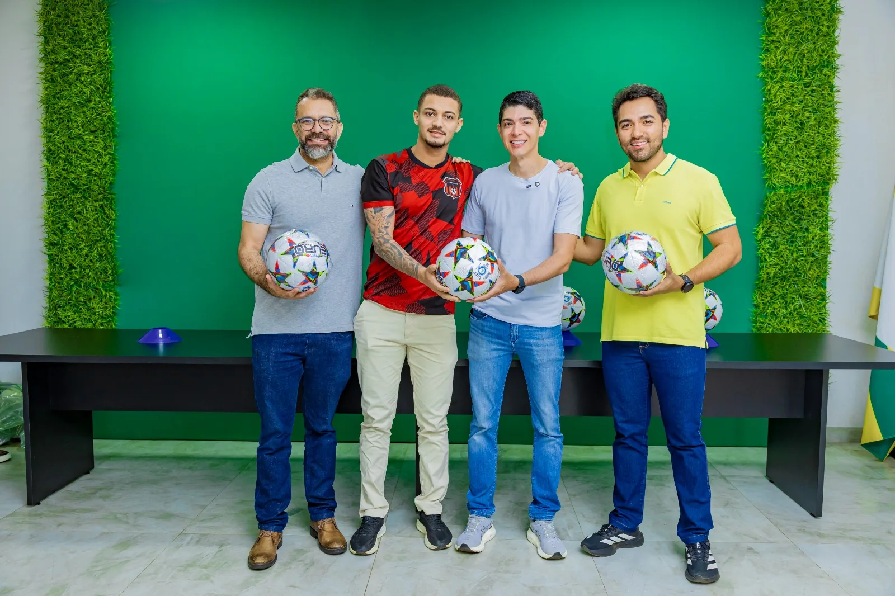
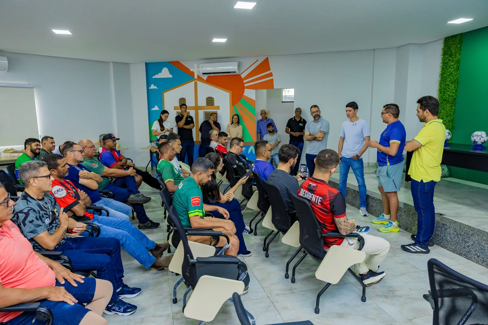
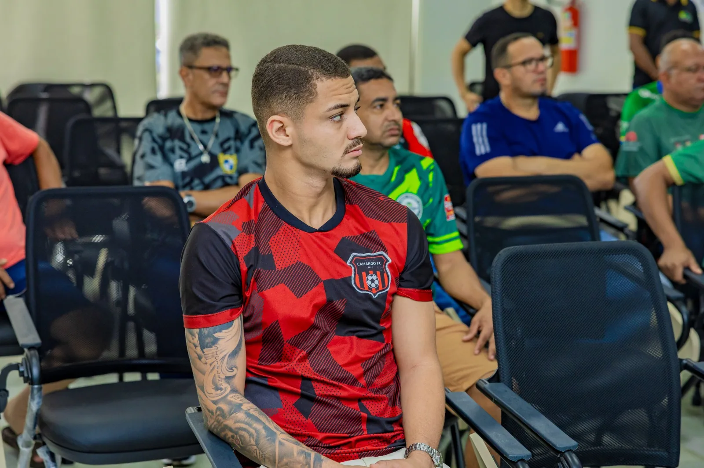

Institucional
Notícia
🤝 ENCONTRO
⭐ Destaque
CAMARGO FC PARTICIPA DE ENCONTRO COM DIRIGENTES NO GABINETE DO PREFEITO
Na manhã de 9 de setembro, dirigentes das equipes que disputam as três divisões do futebol municipal e a categoria Master participaram de um café da manhã no gabinete do prefeito Celso Morais. O Camargo FC foi representado pelo atleta Ariostocly.
O encontro reuniu o prefeito Celso Morais, o vice-prefeito Ubiratan Carvalho, o secretário municipal de Esportes Josué Lobo e representantes dos clubes. Ao final da reunião, cada dirigente recebeu uma bola destinada à equipe que representava.
Fortalecimento do futebol local. Celso Morais defendeu a formação de equipes mais sólidas, organizadas e identificadas com Paraíso do Tocantins. O prefeito destacou que a valorização dos atletas da cidade deve reduzir a dependência de jogadores de fora e ajudar os clubes locais a chegarem mais competitivos a torneios como o Copão.
Apoio e diálogo com os clubes. Josué Lobo ressaltou o trabalho da Secretaria de Esportes e a importância de manter a gestão próxima aos dirigentes, ouvindo críticas e apoiando a realização das competições amadoras do município.
Identidade das equipes. Denys Kerson, dirigente do Rigor City, chamou atenção para a necessidade de preservar o trabalho e a identidade de cada clube. Sua participação reforçou que a união do futebol local deve caminhar junto com planejamento, elenco próprio e continuidade das equipes.
Apoio e diálogo com os clubes. Josué Lobo ressaltou o trabalho da Secretaria de Esportes e a importância de manter a gestão próxima aos dirigentes, ouvindo críticas e apoiando a realização das competições amadoras do município.
Identidade das equipes. Denys Kerson, dirigente do Rigor City, chamou atenção para a necessidade de preservar o trabalho e a identidade de cada clube. Sua participação reforçou que a união do futebol local deve caminhar junto com planejamento, elenco próprio e continuidade das equipes.




📅 09/set/2026 · 7h30📍 Gabinete do prefeito Celso Morais